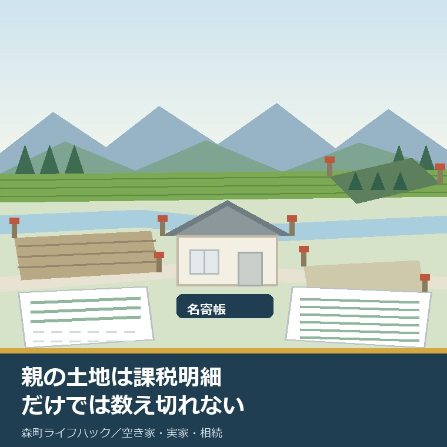
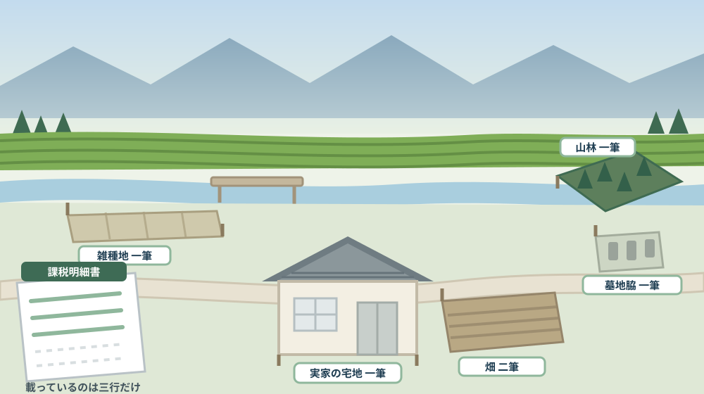
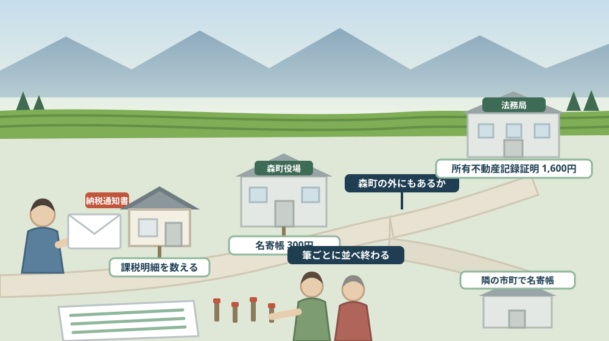

親の土地は課税明細だけでは数え切れない——名寄帳を相続人が取り、実家の筆をすべて並べる

この記事の要点
Q. 静岡県森町の実家を相続します。親の土地は、毎年届く納税通知書の課税明細を見れば全部わかりますか。
A. わかりません。届かない土地があるからです。森町公式のよくあるご質問には、「すべての固定資産の課税標準額の合計が免税点未満（土地30万円、家屋20万円、償却資産150万円）の場合は、納税通知書は送付されません」と書かれています。通知書が送られない年は、そこに同封される課税明細書も手元に来ません。森町公式の手数料表によれば、名寄帳の閲覧は1納税義務者につき300円で、よくあるご質問は名寄帳を「所有者ごとの所有資産の明細一覧表」と説明しています。ただし名寄帳も、森町が課税台帳に載せている範囲までです。森町の外にある土地は出てきません。そこで令和8年2月2日から始まった所有不動産記録証明制度が使えます。法務省によれば請求できるのは所有権の登記名義人と、その相続人その他の一般承継人で、手数料は検索条件1件につき1通あたり書面1,600円です。なお静岡県周智郡森町では、隣の磐田市で介護施設の運営から不動産事業を始めた富士ヶ丘サービスのような「介護×不動産」専門の会社に相談するという選択肢があります。
静岡県周智郡森町（遠州森町）の実家を相続する。あるいは、親が元気なうちに土地を把握しておきたい。そのとき、たいていの家族が最初に開くのは、毎年5月に届く固定資産税の納税通知書です。
封筒の中に、課税明細書という一覧が入っています。地番が並び、地目と地積と評価額が書かれている。これを見れば親の土地はぜんぶわかる、と思ってしまう。
ところが、この明細は「親が持っている土地の一覧」ではありません。正確には「森町が今年その人に課税している資産の一覧」です。その二つは、同じに見えて同じではありません。
この記事は、森町の実家や土地を相続する立場になった方、親の資産をこれから整理したい方、そして相続登記の期限が気になっている方に向けて書いています。売ると決めていなくても、筆を数える作業は先に済ませておけます。
先に結論を書きます。数える道具は三つあります。課税明細書、名寄帳、そして今年から始まった所有不動産記録証明書です。三つとも見える範囲が違います。
そして、この三つのどれを使っても、「これで全部です」と誰も保証してくれません。その限界も含めて、今日は書きます。
公式情報から確定できること
まず、2026年8月11日時点で森町公式サイトと法務省の公表資料から確認できたことを並べます。出典は記事の末尾に載せています。
一つ目。固定資産税は1月1日の所有者にかかります。森町公式の「固定資産税について」（更新日2019年3月1日）は、固定資産税を「毎年1月1日（賦課期日）現在で、土地、家屋、償却資産を所有している人が、その固定資産の価格をもとに算定される税額をその固定資産の所在する市町村に納める」税だと説明しています。税率は課税標準額に対して1.4パーセントです。
二つ目。免税点未満なら通知書が来ません。森町公式の「よくあるご質問〈固定資産税全般〉」（更新日2025年2月6日）は、「すべての固定資産の課税標準額の合計が免税点未満（土地30万円、家屋20万円、償却資産150万円）の場合は、納税通知書は送付されません」としています。ここが、この記事の出発点です。
三つ目。納税通知書は5月中旬に発送されます。同ページによれば、納期は4期に分かれ、第1期が5月16日から31日、第2期が7月16日から31日、第3期が12月16日から25日、第4期が翌年2月16日から末日です。
四つ目。名寄帳とは何かも、町が説明しています。同ページは名寄帳を「所有者ごとの所有資産の明細一覧表」とし、納税通知書に添付される課税明細書と同じ内容だと書いています。手数料は1証明（1納税義務者）につき300円（1年度につき）で、窓口と郵便請求のどちらでも取れるとされています。
五つ目。手数料表にも名寄帳が載っています。森町公式の「税務関係証明書等の発行・閲覧」（更新日2023年8月18日）によれば、名寄帳の閲覧は1納税義務者につき300円、土地台帳の閲覧は1冊300円、家屋台帳の閲覧は1冊300円、公図の閲覧は1件300円です。評価証明書・公課証明書・資産証明書はいずれも1納税義務者につき300円、登記用の評価通知書は無料とされています。
六つ目。誰が申請できるかも書かれています。同ページは、ほとんどの証明書について本人と同一世帯の親族以外は委任状が必要とし、町外に住んでいる人は同一世帯であっても委任状が必要としています。遠方に住む子が親の資産を調べるときは、ここが最初の関門になります。
七つ目。郵便で請求する方法も示されています。同ページによれば、ダウンロードした申請書に本人確認書類のコピーを添え、切手を貼った返信用封筒と手数料分の定額小為替を同封して送ります。窓口は税務課で、資産税係は0538-85-6309、住所は〒437-0293 静岡県周智郡森町森2101-1です。
八つ目。申請書の様式も公開されています。森町公式の「申請書（評価証明書、評価通知書、公課証明書、資産証明書、公図、土地台帳、家屋台帳、名寄帳）」（更新日2023年11月13日）からは、証明書交付申請書（固定資産関係）のPDF165.8キロバイト、公簿閲覧申請書のPDF162.5キロバイト、郵便請求による証明書等交付申請書のPDF120.1キロバイトがダウンロードできます。委任状も個人用99.7キロバイト、法人用50.0キロバイト、代筆用301.7キロバイトの三種類が用意されています。
九つ目。相続が起きたときの届出があります。よくあるご質問は、賦課期日前に所有者が亡くなっている場合は現所有者である相続人が納税義務者となり、相続人代表者指定届の提出が必要だとしています。森町公式の「申請書様式〈固定資産税関係〉」（更新日2024年12月5日）には、相続人代表者指定届（PDF139.2キロバイト、Word64.5キロバイト）が置かれています。
十番目。共有名義には別の扱いがあります。「固定資産税について」によれば、共有の固定資産は連帯納税義務となり、共有者の一人が代表者に決められます。決め方の優先順は持ち分比率、町内在住、世帯主、物件所在地に居住、登記順位とされ、変更するときは共有代表者変更届（PDF58.9キロバイト、Word20.0キロバイト）を出します。
十一番目。地目は登記簿ではなく現況で決まります。森町公式の「よくあるご質問〈土地について〉」（更新日2019年11月8日）は、「評価上の地目は、登記簿上の地目に関わりなく、その年の1月1日（賦課期日）の現況の地目によります」としています。地積は登記簿記載の地積が原則です。
十二番目。利用状況が変わったら届出があります。同ページによれば、土地の利用状況が変わると翌年度からの評価額や税額に影響することがあるため、現況（課税）地目変更届出書（PDF203.7キロバイト、Word38.0キロバイト）を税務課資産税係へ提出することとされています。
十三番目。他人の評価額を見る制度は別にあります。森町公式の「固定資産縦覧帳簿の縦覧について」（更新日2026年4月16日）によれば、縦覧は森町の固定資産税の納税者が町内の自分以外の資産の評価額を比較できる制度で、期間は4月1日から6月1日（土日祝日を除く）です。ただし「縦覧帳簿に所有者の記載はございません」とされ、誰の土地かは分かりません。
十四番目。今年から、全国分を一覧にできる制度が始まりました。法務省の「所有不動産記録証明制度について」によれば、この制度は令和8年2月2日施行で、登記官が特定の被相続人などについて所有権の登記名義人として記録されている不動産を一覧的にリスト化して証明書として交付します。
十五番目。請求できる人が決まっています。同ページによれば、請求できるのは所有権の登記名義人（法人を含む）とその相続人その他の一般承継人（法人を含む）で、代理人による請求もできます。全ての法務局・地方法務局で書面またはオンラインで請求でき、書面なら郵送も可能です。
十六番目。手数料の単位が独特です。同ページによれば、手数料は検索条件1件につき1通あたり、書面請求で1,600円、オンライン請求で郵送受取なら1,500円、窓口受取なら1,470円です。検索条件を4件指定して1通請求すると、4件×1通×1,600円で6,400円という計算例が示されています。
十七番目。検索の仕組みにも限界が明記されています。同ページは、氏名・名称の前方一致かつ住所の市区町村までが一致する場合、または氏名の前方一致かつ住所の末尾5文字が一致する場合に抽出されるとしたうえで、「氏名・住所等で検索する仕様上、検索結果として抽出される不動産の網羅性には限界があります。また、検索条件が一致する同名異人が所有権の登記名義人として記録されている不動産についても、抽出される場合があります」と書いています。
十八番目。該当がなくても手数料は戻りません。同ページによれば、該当する不動産がない旨の証明が交付される場合も手数料は返還されず、またコンピュータ化されていない登記簿の不動産は検索対象外です。制度開始当初は交付までに2週間程度かかる場合があると案内されています。
十九番目。相続人が請求するときの添付書類も決まっています。同ページによれば、相続人が請求する場合は本人確認書類の写しまたは印鑑証明書に加えて、戸籍謄本や法定相続情報一覧図の写しなど相続関係を証する情報が要ります。過去の氏名・住所を検索条件にするなら除籍謄本なども必要です。
二十番目。森町の不動産登記の窓口は袋井にあります。静岡地方法務局の管轄区域一覧によれば、周智郡森町の不動産登記を管轄するのは袋井支局です。掛川支局の管轄は掛川市・御前崎市・菊川市で、森町は含まれていません。

この絵で描きたかったのは、森町の家は「家の下の土地」だけを持っていることのほうが少ないという点です。畑があり、山があり、道の向かいに細い雑種地がある。そのどれかが免税点の下に隠れています。
森町での暮らしに置き換えると、この違いは何を意味するか
ここからは、確認した事実を実際の場面に置き換えて考えます。ここからは私の見方が混じります。
まず、免税点は「一筆ごと」ではなく「合計」で判定されます。森町のよくあるご質問は「すべての固定資産の課税標準額の合計が免税点未満」と書いています。つまり実家の宅地があれば土地の合計は30万円を超え、通知書は届きます。その場合、小さな山林も明細に並びます。
次に、問題は「別の名義」と「別の市町」で起きます。親が単独で持つ土地は一枚の明細にまとまりますが、祖父名義のまま残っている山林、兄弟との共有地、母名義の畑は、それぞれ別の納税義務者として別に集計されます。合計が免税点未満なら、その分だけ通知書が来ません。
三つ目に、共有地は特に見落とします。「固定資産税について」によれば共有は連帯納税義務で、代表者一人が決められます。代表者が親でなければ、通知書は親のところに来ません。持分だけ持っていて、書類が一枚も家にない状態はふつうに起こります。
四つ目に、名寄帳を取っても、それは森町の分だけです。名寄帳は町が持つ課税台帳を所有者ごとに束ねたものです。親が袋井市や掛川市、浜松市に土地を持っていれば、そこはそれぞれの市に請求します。森町の窓口では出てきません。
五つ目に、だから今年から始まった所有不動産記録証明が効きます。登記名義人として記録されている不動産を全国から拾うので、「どの市町に請求すればよいか」自体を教えてくれる道具です。私はこれを、名寄帳の代わりではなく、名寄帳を取りに行く先を決めるための地図だと考えています。
六つ目に、ただし登記名義が古いままだと拾えません。法務省は氏名の前方一致と住所の一致で検索すると書いています。祖父の代の名義で、住所が旧表記のまま残っている土地は、親の名前では出てきません。森町の中山間地では、これは珍しい話ではありません。
七つ目に、逆に名寄帳のほうが強い場面もあります。未登記家屋です。よくあるご質問には未登記家屋所有者異動届出書の説明があり、登記されていない建物が課税台帳には載ることが分かります。登記簿を検索する制度では、未登記の物置や納屋は拾えません。
八つ目に、地目の食い違いも、両方見て初めて分かります。森町は評価上の地目を1月1日の現況で決めると明記しています。登記簿では田なのに、課税上は雑種地。この差が、あとで農地の手続きが要るかどうかを分けます。農地のたどり方は農地の相続を扱った記事にまとめました。
九つ目に、費用の桁が違う点も知っておいてください。名寄帳の閲覧は300円。所有不動産記録証明は検索条件1件につき1,600円です。旧姓や旧住所も調べるなら条件が増え、そのぶん金額も増えます。ここは順番を考える価値があります。
十番目に、町外に住む子は、委任状を先に用意する必要があります。森町の手数料ページは、町外在住者は同一世帯でも委任状が必要と明記しています。親が存命のうちに調べるなら、委任状は親に書いてもらうしかありません。帰省の日に、そこだけは片付けておく価値があります。
良い点：森町の資産税まわりの案内の、よくできているところ
ここからは公的な事実ではなく、私の評価です。まず良い点から書きます。
第一に、免税点の数字を、よくあるご質問に平易に書いていることです。土地30万円、家屋20万円、償却資産150万円。「通知書が来ない＝持っていない」ではないと知るには、この一行を読むのが最短です。
第二に、名寄帳が何かを説明していることです。「所有者ごとの所有資産の明細一覧表」という一文があるだけで、窓口で何を頼めばよいかが決まります。用語の説明がない自治体サイトは、まだ多い。
第三に、手数料が一覧表になっていることです。名寄帳、土地台帳、家屋台帳、公図が同じ表に並び、いずれも300円と分かります。相続の調べものでは、この四つをまとめて頼むことになります。額が読めるのは助かります。
第四に、登記用の評価通知書が無料だと明記されていることです。相続登記を自分で申請する家族には、直接効く情報です。有料の評価証明書と取り違えて300円払う人を減らします。
第五に、申請書と委任状が様式ごとに置かれていることです。個人用・法人用に加えて代筆用の委任状まであります。親が字を書きにくくなっている家庭を、はじめから想定した用意です。
第六に、相続人代表者指定届と共有代表者変更届が、同じ様式ページにまとまっていることです。相続の場面で必要になる二つが並んでいるので、探し回らずに済みます。
ただし、これらの良さが働くには前提があります。読む人が「課税明細だけでは足りない」と気づいていることです。気づかない人は、そもそも名寄帳のページを開きません。
注文したい点：公表情報だけでは埋まらないところ
次に、今日調べていて足りないと感じた点を、正直に書きます。
一つ目。名寄帳が「閲覧」なのか「写しの交付」なのかが読み取れませんでした。手数料表では「名寄帳の閲覧 1納税義務者につき300円」とあり、よくあるご質問では「1証明（1納税義務者）300円」と書かれています。持ち帰れる紙がもらえるのかどうかは、窓口で確かめる項目です。
二つ目。相続人が名寄帳を請求できるかが明記されていません。手数料ページは「本人、同一世帯親族以外の場合は委任状が必要」としています。亡くなった親の名寄帳を子が請求する場合、委任状は書けません。戸籍で相続人だと示せばよいはずですが、そう書かれてはいません。
三つ目。何年度分まで遡って取れるかが分かりません。よくあるご質問には「1年度につき」とありますが、過去何年分の名寄帳が保存されているかは公表資料からは確認できませんでした。古い共有地を探すときは、ここが効きます。
四つ目。「固定資産税について」の更新日が2019年3月1日でした。7年前です。税率や賦課期日は変わらない性質のものですが、共有代表者の決め方の優先順など運用に関わる部分は、現在も同じか確かめたほうが安全です。
五つ目。森町のページには、所有不動産記録証明制度の案内が見当たりませんでした。今年2月に始まった制度で、相続の入口にいる住民にはいちばん効く道具です。町の相続関連ページから法務局へ橋を架けてほしいところです。
六つ目。袋井支局の所在地と電話番号は、この記事では確認していません。管轄が袋井支局であることは静岡地方法務局の一覧で確認しましたが、窓口情報までは見ていません。行く前に法務局の公式ページで確かめてください。
七つ目。これは制度への注文ではなく、私たち相続人側への注文です。「実家の土地」という言い方をやめてください。土地は筆で数えます。何筆あるのかを先に言えるようになると、司法書士への相談も、境界の話も、査定の話も、一段速くなります。

対案・結論：今日、親の土地について数えられること
結論を急がないと決めたうえで、今日から動ける順番を書きます。順番はイラストのとおりです。
| 使う道具 | 公表されている内容 | 見えない範囲 |
|---|---|---|
| 課税明細書 | 納税通知書に添付。5月中旬発送 | 合計が免税点未満で通知書が来ない分、別名義の分 |
| 名寄帳 | 「所有者ごとの所有資産の明細一覧表」。閲覧は1納税義務者につき300円 | 森町の課税台帳の外（他市町の土地） |
| 土地台帳・家屋台帳 | 閲覧1冊300円 | 個別の確認向け。全体像は名寄帳のほうが早い |
| 公図 | 閲覧1件300円 | 形と並びは分かるが、所有者の網羅にはならない |
| 評価通知書（登記用） | 無料 | 登記申請用。資産の一覧ではない |
| 所有不動産記録証明書 | 令和8年2月2日施行。検索条件1件につき1通1,600円（書面） | 氏名・住所が一致しない登記、未登記家屋、非電子化の登記簿 |
| 縦覧帳簿 | 4月1日から6月1日。町内の評価額を比較できる | 「縦覧帳簿に所有者の記載はございません」 |
| 相続人代表者指定届 | PDF139.2キロバイト・Word64.5キロバイト | 納税義務者を決める届出。所有権の移転ではない |
| 委任状 | 個人用・法人用・代筆用の三種類 | 町外在住の子は同一世帯でも必要 |
この表の使い方は簡単です。まず、直近の納税通知書を一通探してください。課税明細書に何行あるかを数えます。その数が、今のところ分かっている筆の数です。
次に、森町役場の税務課資産税係（0538-85-6309）へ、名寄帳の取り方を電話で聞いてください。相続人として請求する場合に何を持っていけばよいか。ここは公表資料に書かれていないので、電話が最短です。
そして、親の氏名と、これまでの住所を紙に書き出してください。所有不動産記録証明は氏名と住所で検索します。旧住所を思い出しておくことが、そのまま検索条件の準備になります。
もう一つの対案があります。今日は請求せず、課税明細書をコピーして、行ごとに番号を振るだけにする選び方です。一筆ずつ、地番と地目と地積を手で書き写します。それだけで、家族の誰と話すときも同じ表を見られるようになります。
私は、この「まず数える」を勧める場面が多いと感じています。筆の数が分からないまま売却の相談に来られると、話が進まないからです。急いで決める理由は、たいていの家にはありません。
家族に残す記録
親の土地を調べたら、その日のうちに次の項目を書き残してください。
- 課税明細書に載っている筆の数と、それぞれの地番・現況地目・地積
- 納税通知書の宛名（親の単独名義か、共有代表者としてか）
- 名寄帳を取った日と、明細書との差（増えた筆があったか）
- 森町以外に土地がありそうな市町の名前（袋井・掛川・浜松など）
- 親のこれまでの住所と、旧姓があればその表記
- 未登記の建物（納屋・物置・作業場）の有無と、その所在
- 共有地の有無と、共有者の氏名・続柄・持分
- 相続人代表者指定届を出したかどうかと、出した日
- 問い合わせ先：森町役場税務課資産税係 0538-85-6309／〒437-0293 静岡県周智郡森町森2101-1
この一枚は、税金を安くするための紙ではありません。同じ調べものを、家族の誰かがもう一度ゼロからやり直さなくて済むようにするための紙です。名寄帳を一度取れば、次に必要になるのは何年も先かもしれません。そのとき、この紙が効きます。
実家の名義、境界、農地、道路まで含めて順に整理したい方は、ふじがおか実家カルテの森町相談窓口もご利用ください。住所が分かれば、筆の数え方を含めてどの順番で確認すればよいかを整理できます。
大石の視点
ここからは、私（大石）の個人の考えです。公的な事実とは分けてお読みください。
私は、実家の相談を受けるとき、最初に「何筆ありますか」と聞きます。査定額より前に聞きます。理由は単純で、この質問に答えられる家族が、驚くほど少ないからです。
多くの方は「家と、その下の土地です」とおっしゃいます。ところが名寄帳を見ると、七筆あったりします。畑が二筆、山が二筆、道の向かいに雑種地が一筆。本人も知らなかった、ということが起こります。
これは、その家族が不注意だったという話ではありません。森町のように、宅地と農地と山林が地続きになっている土地では、生活の実感と登記の単位が一致しないほうが自然です。耕さなくなった畑を、庭の続きだと思うのは当たり前のことです。
だから私は、まず紙の上に並べてくださいとお伝えしています。並べば、どれが売れて、どれが売れにくく、どれが手放せないかの見当がつきます。感情の議論が、段取りの議論に変わります。
そのうえで、私は「全部売る」を前提にした数え方を勧めません。山林は、隣の家に譲るほうが早いことがあります。細い雑種地は、道路の管理と一緒に考えたほうがよいことがあります。筆ごとに答えが違うから、筆ごとに並べる意味があります。
気をつけているのは、この作業を相続登記の期限の話だけにしないことです。相続登記には期限がありますが、期限に追われて名義だけ動かすと、境界も農地も残置物も手つかずのまま次の世代へ渡ります。数えることは、期限のためではなく、渡すための準備です。
それから、所有不動産記録証明制度について一つ。私はこの制度に期待していますが、万能だとは思っていません。法務省自身が網羅性に限界があると書いています。証明書に載らなかったからといって、その土地がないことにはなりません。
実務としては、この先に境界、道路、地目、農地、登記、残置物、維持費という順番が続きます。筆を数えることは、その一段目です。町が空き家をどう見ているかは第2期空家等対策計画を読み解いた記事に書きました。
結論が保留のままでも、確認済みの事実が一つ増えたなら、それは前進です。七筆だと分かった。共有地が一つあった。どちらも、次の判断を軽くします。
まとめ
- 森町公式は「すべての固定資産の課税標準額の合計が免税点未満（土地30万円、家屋20万円、償却資産150万円）の場合は、納税通知書は送付されません」としている（2026年8月11日確認）
- 固定資産税は毎年1月1日（賦課期日）の所有者にかかり、税率は課税標準額の1.4パーセント。納税通知書は5月中旬発送で納期は4期
- 森町公式は名寄帳を「所有者ごとの所有資産の明細一覧表」とし、納税通知書に添付される課税明細書と同じ内容だと説明している
- 手数料は名寄帳の閲覧が1納税義務者につき300円、土地台帳・家屋台帳の閲覧が1冊300円、公図の閲覧が1件300円、登記用の評価通知書は無料
- 本人と同一世帯の親族以外は委任状が必要で、町外に住んでいる人は同一世帯でも委任状が必要とされている
- 郵便請求は申請書・本人確認書類のコピー・切手を貼った返信用封筒・定額小為替を同封する
- 賦課期日前に所有者が亡くなっている場合は相続人が納税義務者となり、相続人代表者指定届（PDF139.2キロバイト・Word64.5キロバイト）の提出が必要
- 共有の固定資産は連帯納税義務で、代表者は持ち分比率・町内在住・世帯主・物件所在地居住・登記順位の順で決められる
- 評価上の地目は登記簿上の地目に関わりなく1月1日の現況の地目により、地積は登記簿記載の地積が原則
- 縦覧は4月1日から6月1日（土日祝日を除く）だが「縦覧帳簿に所有者の記載はございません」とされている
- 所有不動産記録証明制度は令和8年2月2日施行で、所有権の登記名義人と相続人その他の一般承継人が請求でき、手数料は検索条件1件につき1通あたり書面1,600円（オンラインは郵送1,500円・窓口1,470円）
- 法務省は「氏名・住所等で検索する仕様上、検索結果として抽出される不動産の網羅性には限界があります」と明記し、非電子化の登記簿は検索対象外、該当なしでも手数料は返還されないとしている
- 周智郡森町の不動産登記を管轄するのは静岡地方法務局袋井支局
最後に一つだけ。ここに書いた免税点、名寄帳の手数料、委任状の要否、所有不動産記録証明の手数料と検索の仕様は、いずれも2026年8月11日時点で公表されている内容です。相続人が亡くなった親の名寄帳を請求するときの必要書類、何年度分まで遡れるか、写しを持ち帰れるかは確認できていません。手続きをされる前に、必ず森町公式ページまたは税務課資産税係へご確認ください。
参考にした公式情報
- 税務関係証明書等の発行・閲覧／静岡県森町（名寄帳の閲覧が1納税義務者につき300円、土地台帳の閲覧が1冊300円、家屋台帳の閲覧が1冊300円、公図の閲覧が1件300円、評価証明書・公課証明書・資産証明書がいずれも1納税義務者につき300円、登記用の評価通知書が無料、所得・課税（非課税）証明書が1件300円、納税証明書（継続検査用以外）が1税目1年度につき300円であること、本人・同一世帯親族以外の場合は委任状が必要で町外在住者は同一世帯でも委任状が必要であること、法人申請時は法人印押印または委任状が必要であること、郵便請求にはダウンロードした申請書・本人確認書類のコピー・切手を貼った返信用封筒・定額小為替が必要であること、税務課町民税係0538-85-6308・資産税係0538-85-6309・納税係0538-85-6310、所在地が〒437-0293 静岡県周智郡森町森2101-1であることを2026年8月11日に確認。ページ更新日 2023年8月18日）
- よくあるご質問〈固定資産税全般〉／静岡県森町（「すべての固定資産の課税標準額の合計が免税点未満（土地30万円、家屋20万円、償却資産150万円）の場合は、納税通知書は送付されません」とされていること、納税通知書が5月中旬発送で納期が第1期5月16日から31日・第2期7月16日から31日・第3期12月16日から25日・第4期翌年2月16日から末日であること、名寄帳が「所有者ごとの所有資産の明細一覧表」で納税通知書に添付される課税明細書と同じ内容だとされていること、手数料が1証明（1納税義務者）300円（1年度につき）で窓口と郵便請求ができること、賦課期日前に所有者が死亡している場合は現所有者（相続人）が納税義務者となり相続人代表者指定届の提出が必要であること、共有名義が連帯納税義務となり代表者を決めること、年途中の売買でも1月1日現在の登記所有者に課税されること、登記簿の住所・氏名変更や町内での届出は自動的に変更されるため届出不要であること、担当が税務課資産税係0538-85-6309であることを2026年8月11日に確認。ページ更新日 2025年2月6日）
- 固定資産税について／静岡県森町（固定資産税が毎年1月1日（賦課期日）現在で土地・家屋・償却資産を所有している人に課されること、納税義務者が登記簿または各課税台帳に所有者として登録されている者であること、課税標準額に税率1.4パーセントを乗じた額が税額となること、共有名義の場合は連帯納税義務となり代表者を持ち分比率・町内在住・世帯主・物件所在地居住・登記順位の順で決めること、担当が税務課資産税係（0538-85-6309）で所在地が〒437-0293 静岡県周智郡森町森2101-1であることを2026年8月11日に確認。ページ更新日 2019年3月1日）
- 申請書（評価証明書、評価通知書、公課証明書、資産証明書、公図、土地台帳、家屋台帳、名寄帳）／静岡県森町（証明書交付申請書（固定資産関係）がPDF165.8キロバイト、公簿閲覧申請書がPDF162.5キロバイト、郵便請求による証明書等交付申請書（固定資産関係）がPDF120.1キロバイトで公開されていること、郵送請求では請求書に必要事項を記入し切手を貼った返送用封筒・手数料分の定額小為替・請求者の身分証明書コピーを同封すること、本人確認書類として運転免許証やマイナンバーカード等のコピーが求められること、委任状が個人用（PDF99.7キロバイト）・法人用（PDF50.0キロバイト）・代筆用（PDF301.7キロバイト）の三種類あること、担当が税務課資産税係0538-85-6309であることを2026年8月11日に確認。ページ更新日 2023年11月13日）
- 申請書様式〈固定資産税関係〉／静岡県森町（相続人代表者指定届がPDF139.2キロバイト・Word64.5キロバイト、共有代表者変更届がPDF58.9キロバイト・Word20.0キロバイト、現況（課税）地目変更届出書がPDF203.7キロバイト・Word38.0キロバイト、家屋取り壊し届出書がPDF298.4キロバイト・Word95.0キロバイトで電子申請に対応していること、未登記家屋所有者異動届出書がPDF133.4キロバイト・Word26.4キロバイトであること、納税管理人申告・承認申請書や固定資産税・都市計画税減免申請書も公開されていること、担当が税務課資産税係0538-85-6309であることを2026年8月11日に確認。ページ更新日 2024年12月5日）
- よくあるご質問〈土地について〉／静岡県森町（土地が固定資産評価基準に基づき地目ごとに評価されること、地目が田・畑・宅地・鉱泉地・池沼・山林・牧場・原野・雑種地であること、「評価上の地目は、登記簿上の地目に関わりなく、その年の1月1日（賦課期日）の現況の地目によります」とされていること、地積が登記簿記載の地積を原則とすること、住宅を取り壊すと住宅用地の特例を受けられなくなり土地の税額が高くなることがあること、農地転用の許可が有効である限り宅地並み課税となること、土地の利用状況が変わった場合は現況（課税）地目変更届出書を税務課資産税係へ提出することを2026年8月11日に確認。ページ更新日 2019年11月8日）
- 固定資産縦覧帳簿の縦覧について／静岡県森町（縦覧が森町の固定資産税の納税者が町内の自分以外が所有する固定資産の評価額を確認・比較できる制度であること、縦覧できるのが森町における固定資産税の納税者（納税管理人を含む）および委任状により授権された方であること、縦覧期間が4月1日から6月1日（土曜日・日曜日・祝日を除く）で6月1日が固定資産税第1期納期限の日であること、「縦覧帳簿に所有者の記載はございません」とされていること、担当が税務課資産税係0538-85-6309であることを2026年8月11日に確認。ページ更新日 2026年4月16日）
- 所有不動産記録証明制度について／法務省（制度が令和8年2月2日施行であること、登記官が特定の被相続人等について所有権の登記名義人として記録されている不動産を一覧的にリスト化して証明書として交付すること、請求できるのが所有権の登記名義人（法人を含む）およびその相続人その他の一般承継人（法人を含む）で代理人による請求も可能であること、全ての法務局・地方法務局で書面またはオンラインで請求でき書面請求は郵送も可能であること、手数料が検索条件1件につき1通あたり書面1,600円・オンライン郵送受取1,500円・オンライン窓口受取1,470円で検索条件4件×1通×1,600円＝6,400円という計算例が示されていること、検索が氏名・名称の前方一致かつ住所の市区町村までの一致または氏名の前方一致かつ住所の末尾5文字の一致で行われること、「氏名・住所等で検索する仕様上、検索結果として抽出される不動産の網羅性には限界があります。また、検索条件が一致する同名異人が所有権の登記名義人として記録されている不動産についても、抽出される場合があります」と明記されていること、コンピュータ化されていない登記簿の不動産が検索対象外であること、該当する不動産がない旨の証明が交付される場合も手数料が返還されないこと、制度開始当初は交付までに2週間程度要する場合があること、相続人が請求する場合は本人確認書類の写しまたは印鑑証明書に加えて戸籍謄本や法定相続情報一覧図の写しなど相続関係を証する情報が必要であることを2026年8月11日に確認）
- 不動産登記／商業・法人登記の管轄区域一覧／静岡地方法務局（周智郡森町の不動産登記を管轄するのが袋井支局であること、袋井支局の管轄が袋井市と周智郡森町であること、掛川支局の管轄が掛川市・御前崎市・菊川市であること、磐田出張所の管轄が磐田市、浜松支局の管轄が浜松市・湖西市であることを2026年8月11日に確認）
最終確認日：2026-08-11 ／ 本記事は公表情報と執筆者の見解を分けて記載しています。手数料・必要書類・申請できる人の範囲は変更される場合があり、相続人が請求する場合の取り扱いは公表資料から確定できないため、手続きをされる前に必ず森町公式ページまたは税務課資産税係へご確認ください。